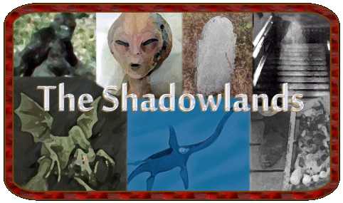

|
This is our 19th year online!
Thanks for your support.
News: We
are still alive :)
Updated: 6-6-13
|

Hello and
welcome to The Shadowlands. Since 1994, The Shadowlands has been
dedicated
to informing and enlightening visitors on such topics as Ghosts and
hauntings,
mysterious creatures such as Bigfoot and Sea Serpents, UFOs and Aliens,
and many other unsolved mysteries. We have provided general information
on some subjects and a bit more in depth info on others as my time and
experiences allow. If you read this pages with an open mind you should
come away with a better understanding of these mysteries. While all of
these subjects are laughed at or frowned upon by many, We challenge you
to at least take the time to decide for yourself. We have included text
files, video, sounds, pictures, eye witness accounts and more on the
pages
that follow. We are always adding new information and update various
pages
on a monthly basis. We have also have created a few pages to visit when
you need a break from the norm or the studies here. There is something
for everyone here so take the time to look around The Shadowlands and
stop
back often, there's always something new....Thanks Dave Juliano &
Tina
Carlson |